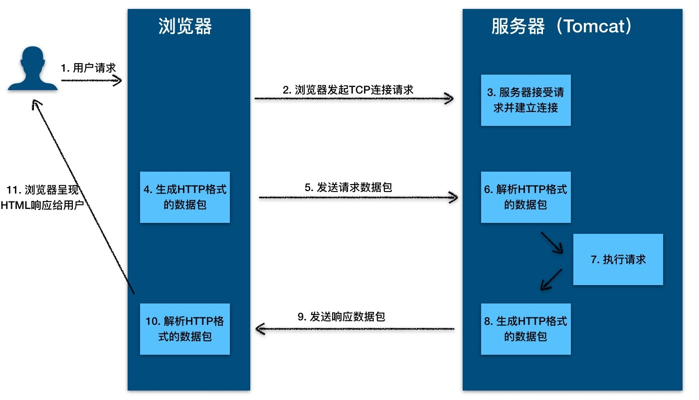
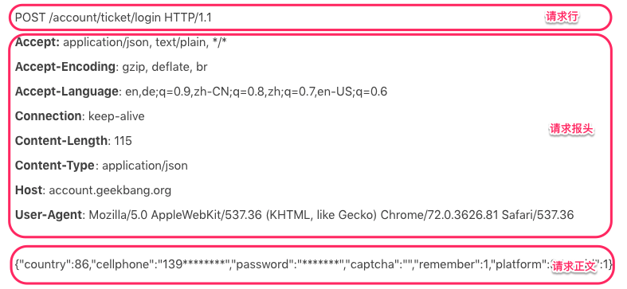
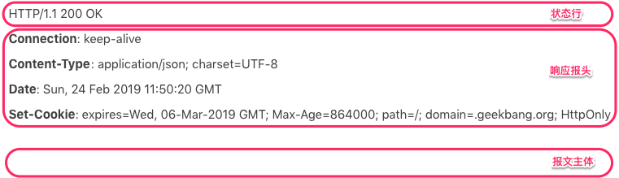

- 00 开篇词 Java程序员如何快速成长？.md
- 01 Web容器学习路径.md
- 02 HTTP协议必知必会.md
- 03 你应该知道的Servlet规范和Servlet容器.md
- 04 实战：纯手工打造和运行一个Servlet.md
- 05 Tomcat系统架构（上）： 连接器是如何设计的？.md
- 06 Tomcat系统架构（下）：聊聊多层容器的设计.md
- 07 Tomcat如何实现一键式启停？.md
- 08 Tomcat的“高层们”都负责做什么？.md
- 09 比较：Jetty架构特点之Connector组件.md
- 10 比较：Jetty架构特点之Handler组件.md
- 11 总结：从Tomcat和Jetty中提炼组件化设计规范.md
- 12 实战：优化并提高Tomcat启动速度.md
- 13 热点问题答疑（1）：如何学习源码？.md
- 14 NioEndpoint组件：Tomcat如何实现非阻塞I_O？.md
- 15 Nio2Endpoint组件：Tomcat如何实现异步I_O？.md
- 16 AprEndpoint组件：Tomcat APR提高I_O性能的秘密.md
- 17 Executor组件：Tomcat如何扩展Java线程池？.md
- 18 新特性：Tomcat如何支持WebSocket？.md
- 19 比较：Jetty的线程策略EatWhatYouKill.md
- 20 总结：Tomcat和Jetty中的对象池技术.md
- 21 总结：Tomcat和Jetty的高性能、高并发之道.md
- 22 热点问题答疑（2）：内核如何阻塞与唤醒进程？.md
- 23 Host容器：Tomcat如何实现热部署和热加载？.md
- 24 Context容器（上）：Tomcat如何打破双亲委托机制？.md
- 25 Context容器（中）：Tomcat如何隔离Web应用？.md
- 26 Context容器（下）：Tomcat如何实现Servlet规范？.md
- 27 新特性：Tomcat如何支持异步Servlet？.md
- 28 新特性：Spring Boot如何使用内嵌式的Tomcat和Jetty？.md
- 29 比较：Jetty如何实现具有上下文信息的责任链？.md
- 30 热点问题答疑（3）：Spring框架中的设计模式.md
- 31 Logger组件：Tomcat的日志框架及实战.md
- 32 Manager组件：Tomcat的Session管理机制解析.md
- 33 Cluster组件：Tomcat的集群通信原理.md
- 34 JVM GC原理及调优的基本思路.md
- 35 如何监控Tomcat的性能？.md
- 36 Tomcat I_O和线程池的并发调优.md
- 37 Tomcat内存溢出的原因分析及调优.md
- 38 Tomcat拒绝连接原因分析及网络优化.md
- 39 Tomcat进程占用CPU过高怎么办？.md
- 40 谈谈Jetty性能调优的思路.md
- 41 热点问题答疑（4）： Tomcat和Jetty有哪些不同？.md
- 特别放送 如何持续保持对学习的兴趣？.md
- 结束语 静下心来，品味经典.md
02 HTTP协议必知必会
在开始学习Web容器之前，我想先问你一个问题：HTTP和HTML有什么区别？
为什么我会问这个问题？你可以把它当作一个入门测试，检测一下自己的对HTTP协议的理解。因为Tomcat和Jetty本身就是一个“HTTP服务器 + Servlet容器”，如果你想深入理解Tomcat和Jetty的工作原理，我认为理解HTTP协议的工作原理是学习的基础。
如果你对这个问题还稍有迟疑，那么请跟我一起来回顾一下HTTP协议吧。
HTTP的本质
HTTP协议是浏览器与服务器之间的数据传送协议。作为应用层协议，HTTP是基于TCP/IP协议来传递数据的（HTML文件、图片、查询结果等），HTTP协议不涉及数据包（Packet）传输，主要规定了客户端和服务器之间的通信格式。
下面我通过一个例子来告诉你HTTP的本质是什么。
假如浏览器需要从远程HTTP服务器获取一个HTML文本，在这个过程中，浏览器实际上要做两件事情。
与服务器建立Socket连接。
生成请求数据并通过Socket发送出去。
第一步比较容易理解，浏览器从地址栏获取用户输入的网址和端口，去连接远端的服务器，这样就能通信了。
我们重点来看第二步，这个请求数据到底长什么样呢？都请求些什么内容呢？或者换句话说，浏览器需要告诉服务端什么信息呢？
首先最基本的是，你要让服务端知道你的意图，你是想获取内容还是提交内容；其次你需要告诉服务端你想要哪个内容。那么要把这些信息以一种什么样的格式放到请求里去呢？这就是HTTP协议要解决的问题。也就是说，HTTP协议的本质就是一种浏览器与服务器之间约定好的通信格式。那浏览器与服务器之间具体是怎么工作的呢？
HTTP工作原理
请你来看下面这张图，我们过一遍一次HTTP的请求过程。

从图上你可以看到，这个过程是：
1.用户通过浏览器进行了一个操作，比如输入网址并回车，或者是点击链接，接着浏览器获取了这个事件。
2.浏览器向服务端发出TCP连接请求。
3.服务程序接受浏览器的连接请求，并经过TCP三次握手建立连接。
4.浏览器将请求数据打包成一个HTTP协议格式的数据包。
5.浏览器将该数据包推入网络，数据包经过网络传输，最终达到端服务程序。
6.服务端程序拿到这个数据包后，同样以HTTP协议格式解包，获取到客户端的意图。
7.得知客户端意图后进行处理，比如提供静态文件或者调用服务端程序获得动态结果。
8.服务器将响应结果（可能是HTML或者图片等）按照HTTP协议格式打包。
9.服务器将响应数据包推入网络，数据包经过网络传输最终达到到浏览器。
10.浏览器拿到数据包后，以HTTP协议的格式解包，然后解析数据，假设这里的数据是HTML。
11.浏览器将HTML文件展示在页面上。
那我们想要探究的Tomcat和Jetty作为一个HTTP服务器，在这个过程中都做了些什么事情呢？主要是接受连接、解析请求数据、处理请求和发送响应这几个步骤。这里请你注意，可能有成千上万的浏览器同时请求同一个HTTP服务器，因此Tomcat和Jetty为了提高服务的能力和并发度，往往会将自己要做的几个事情并行化，具体来说就是使用多线程的技术。这也是专栏所关注的一个重点，我在后面会进行专门讲解。
HTTP请求响应实例
你有没有注意到，在浏览器和HTTP服务器之间通信的过程中，首先要将数据打包成HTTP协议的格式，那HTTP协议的数据包具体长什么样呢？这里我以极客时间的登陆请求为例，用户在登陆页面输入用户名和密码，点击登陆后，浏览器发出了这样的HTTP请求：

你可以看到，HTTP请求数据由三部分组成，分别是请求行、请求报头、请求正文。当这个HTTP请求数据到达Tomcat后，Tomcat会把HTTP请求数据字节流解析成一个Request对象，这个Request对象封装了HTTP所有的请求信息。接着Tomcat把这个Request对象交给Web应用去处理，处理完后得到一个Response对象，Tomcat会把这个Response对象转成HTTP格式的响应数据并发送给浏览器。
我们再来看看HTTP响应的格式，HTTP的响应也是由三部分组成，分别是状态行、响应报头、报文主体。同样，我还以极客时间登陆请求的响应为例。

具体的HTTP协议格式，你可以去网上搜索，我就不再赘述了。为了更好地帮助你理解HTTP服务器（比如Tomcat）的工作原理，接下来我想谈一谈Cookie跟Session的原理。
Cookie和Session
我们知道，HTTP协议有个特点是无状态，请求与请求之间是没有关系的。这样会出现一个很尴尬的问题：Web应用不知道你是谁。比如你登陆淘宝后，在购物车中添加了三件商品，刷新一下网页，这时系统提示你仍然处于未登录的状态，购物车也空了，很显然这种情况是不可接受的。因此HTTP协议需要一种技术让请求与请求之间建立起联系，并且服务器需要知道这个请求来自哪个用户，于是Cookie技术出现了。
1. Cookie技术
Cookie是HTTP报文的一个请求头，Web应用可以将用户的标识信息或者其他一些信息（用户名等）存储在Cookie中。用户经过验证之后，每次HTTP请求报文中都包含Cookie，这样服务器读取这个Cookie请求头就知道用户是谁了。Cookie本质上就是一份存储在用户本地的文件，里面包含了每次请求中都需要传递的信息。
2. Session技术
由于Cookie以明文的方式存储在本地，而Cookie中往往带有用户信息，这样就造成了非常大的安全隐患。而Session的出现解决了这个问题，Session可以理解为服务器端开辟的存储空间，里面保存了用户的状态，用户信息以Session的形式存储在服务端。当用户请求到来时，服务端可以把用户的请求和用户的Session对应起来。那么Session是怎么和请求对应起来的呢？答案是通过Cookie，浏览器在Cookie中填充了一个Session ID之类的字段用来标识请求。
具体工作过程是这样的：服务器在创建Session的同时，会为该Session生成唯一的Session ID，当浏览器再次发送请求的时候，会将这个Session ID带上，服务器接受到请求之后就会依据Session ID找到相应的Session，找到Session后，就可以在Session中获取或者添加内容了。而这些内容只会保存在服务器中，发到客户端的只有Session ID，这样相对安全，也节省了网络流量，因为不需要在Cookie中存储大量用户信息。
3. Session创建与存储
那么Session在何时何地创建呢？当然还是在服务器端程序运行的过程中创建的，不同语言实现的应用程序有不同的创建Session的方法。在Java中，是Web应用程序在调用HttpServletRequest的getSession方法时，由Web容器（比如Tomcat）创建的。那HttpServletRequest又是什么呢？别着急，我们下一期再聊。
Tomcat的Session管理器提供了多种持久化方案来存储Session，通常会采用高性能的存储方式，比如Redis，并且通过集群部署的方式，防止单点故障，从而提升高可用。同时，Session有过期时间，因此Tomcat会开启后台线程定期的轮询，如果Session过期了就将Session失效。
本期精华
HTTP协议和其他应用层协议一样，本质上是一种通信格式。回到文章开头我问你的问题，其实答案很简单：HTTP是通信的方式，HTML才是通信的目的，就好比HTTP是信封，信封里面的信（HTML）才是内容；但是没有信封，信也没办法寄出去。HTTP协议就是浏览器与服务器之间的沟通语言，具体交互过程是请求、处理和响应。
由于HTTP是无状态的协议，为了识别请求是哪个用户发过来的，出现了Cookie和Session技术。Cookie本质上就是一份存储在用户本地的文件，里面包含了每次请求中都需要传递的信息；Session可以理解为服务器端开辟的存储空间，里面保存的信息用于保持状态。作为Web容器，Tomcat负责创建和管理Session，并提供了多种持久化方案来存储Session。
课后思考
在HTTP/1.0时期，每次HTTP请求都会创建一个新的TCP连接，请求完成后之后这个TCP连接就会被关闭。这种通信模式的效率不高，所以在HTTP/1.1中，引入了HTTP长连接的概念，使用长连接的HTTP协议，会在响应头加入Connection:keep-alive。这样当浏览器完成一次请求后，浏览器和服务器之间的TCP连接不会关闭，再次访问这个服务器上的网页时，浏览器会继续使用这一条已经建立的连接，也就是说两个请求可能共用一个TCP连接。
今天留给你的思考题是，我在上面提到HTTP的特点是无状态的，多个请求之间是没有关系的，这是不是矛盾了？
不知道今天的内容你消化得如何？如果还有疑问，请大胆的在留言区提问，也欢迎你把你的课后思考和心得记录下来，与我和其他同学一起讨论。如果你觉得今天有所收获，欢迎你把它分享给你的朋友。
© 2019 - 2023 Liangliang Lee. Powered by gin and hexo-theme-book.